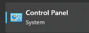
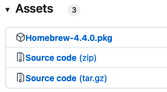
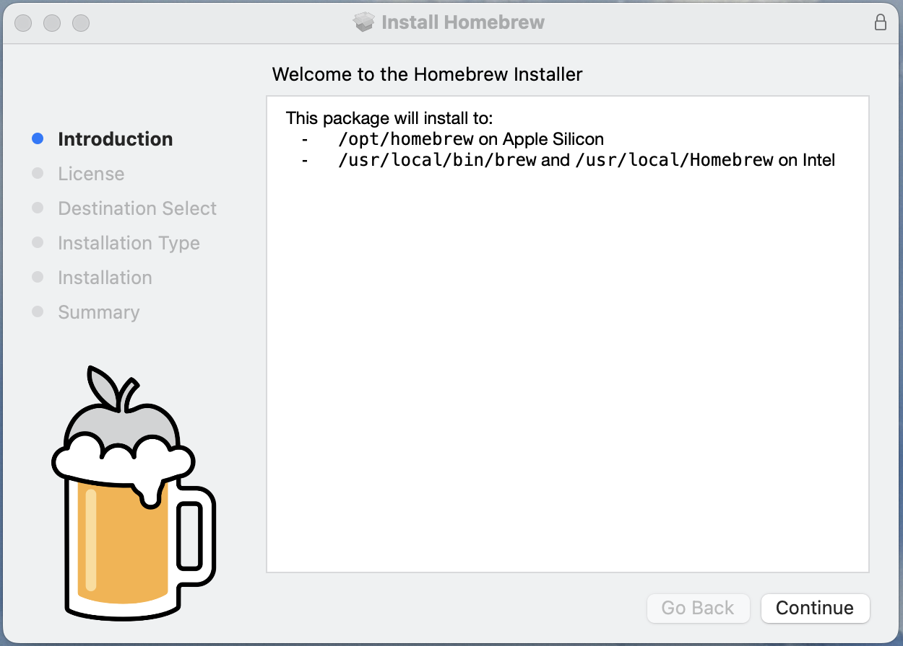
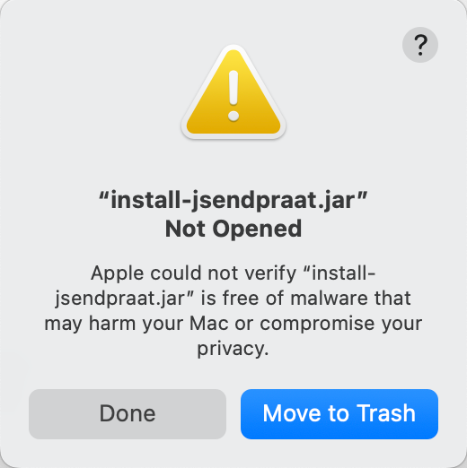
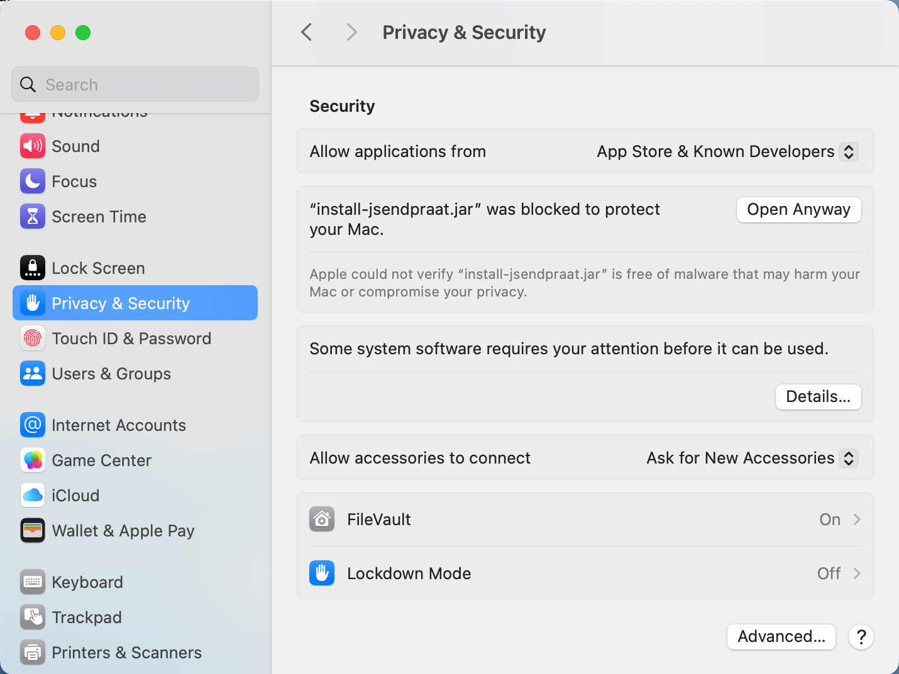
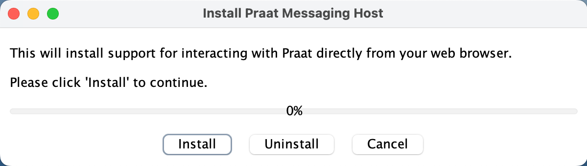

Installing Praat Browser Integration
When you are browsing a LaBB-CAT corpus (either installed on your own computer or on a server), the transcript page can integrate directly with Praat so that you can open utterance in Praat directly from your browser.
LaBB-CAT’s browser integration with Praat currently does not work with Safari, so if you’re using a Mac, ensure you try the steps below in Google Chrome, Microsoft Edge, or Mozilla Firefox.
In order for this to work, you need some software installed on your local computer:
1. Install Praat
If you don’t already have Praat, or you have a version older than 6.2.05, download and install Praat from the Praat website:
2. Install Java if it’s not already installed
Java may already be installed on you system. The steps for discovering if Java is already installed, and how to install it if it’s not, depend on your operating system:
On Windows, before you can install LaBB-CAT, you first must have Java installed.
1. Check Java
Use the following steps to check whether you already have Java installed.
- Press the Start menu button.
- Type
Control Panel - Select the Control Panel option that appears.
 - Type
Java
If a Java icon appears as shown in Figure 1, then you already have Java, and can skip section 2.
If there’s no Java icon in the Control Panel, follow the steps in the next section to install it.
2. Install Java
- Open the Java website in your browser:
https://www.java.com/ - Press the Download Java button.
- Press the Download Java button on the next page and save the resulting installer file.
- Click the installer to run it.
- Press Install.
- Press Close.
These instructions are for newer M-series Macs, and will not work for older Intel-based Macs. Sorry!
On OS X, there are a various ways to install Java.
You can try the Java website in your browser:
https://www.java.com/
Or you can use the ‘Homebrew’ package management system.
You may already have one or other of these installed; if so, you can skip the corresponding section below.
1. Install Homebrew
Homebrew is a ‘package manager’ for Mac computers, which allows you to install other programes, including Java.
- Open the following page in your web browser:
https://github.com/Homebrew/brew/releases/latest - Scroll down to the Assets section.
 - Click the file called Homebrew-n.n.n.pkg (where n.n.n is the version number) to download the file.
- Once the file has been downloaded, double-click on it to run the installer.
 - Click Continue, Continue, Agree and Install to complete the installation.
2. Install Java
- Open Launchpad and type
Terminal. - Double click Terminal to open a command shell.
- Type in the following command:
brew install openjdk - Press the returnreturn key on your keyboard to enter the command.
Some text will appear in the Terminal window while Homebrew downloads everything it needs to install Java
Once it’s finished, you’ll see the%shell prompt again.
3. Install the Praat Integration browser extension
- In LaBB-CAT, open any transcript.
- On the top-right of the transcript page, above the playback controls, there’s a Praat icon - click it.
- Follow the instructions that appear (these vary depending on what web browser you use).
You may need to grant a browser extension permission to install, and it’s possible you will need a connection to the internet in order to download this extension.
4. Install the Praat Messaging Host
- Once you’ve installed the browser extension, return to the transcript page.
- Press OK on the message that appears, to reload the page.
- Click on any line, and select the ‘Open Text Grid in Praat’ option on the menu.
You will see a page with three-step instructions for finishing the Praat integration.
Assuming you already have Praat and Java installed, you just have to do the third step. i.e. download and run a program called “install-jsendpraat.jar”.
- Click the install-jsendpraat.jar link, save the resulting file.
- Double-click the program you just saved.
- On the window that appears, press the Install button.
When you try to run install-jsendpraat.jar on a Mac, you may see the following message:

If so:
Press Done.
Click the Apple icon on the top left corner of the screen to open the menu.
Select System Settings…
On the left hand side, select the Privacy and Security option.
Scroll to the bottom of the page.
Under Security you should seem a message saying
“install-sendpraat.jar” was blocked to protect your Mac
Press Open Anyway
You will see a warning message:
Press Open Anyway
You may see a further prompt to allow this:

Finally you should see the installer open:

Then you can press Install.
You also may be asked where Praat is installed; Navigate to the location where Praat is installed, and double-click the “Praat.exe” file (on some systems the file may simply be called “Praat”). The Praat program may open, and then immediately close, as LaBB-CAT tests it can communicate with Praat.
Close the instructions page.
If in doubt, check the  online help on the transcript page; it has a section explaining how to set up Praat integration on various browsers and operating systems.
online help on the transcript page; it has a section explaining how to set up Praat integration on various browsers and operating systems.
Now Praat integration has been set up, and you should be able to access Praat options in the transcript page from now on…